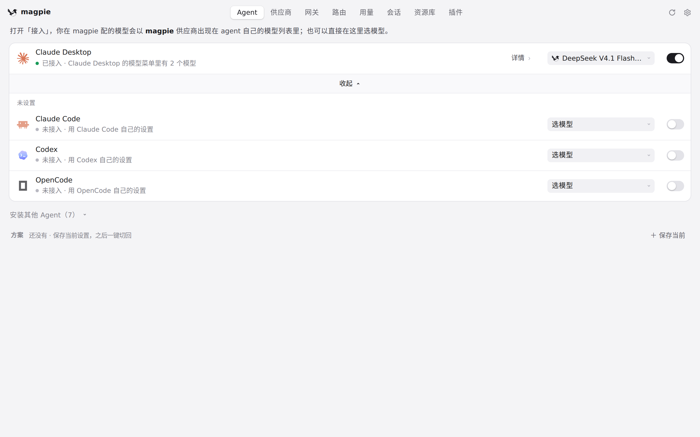
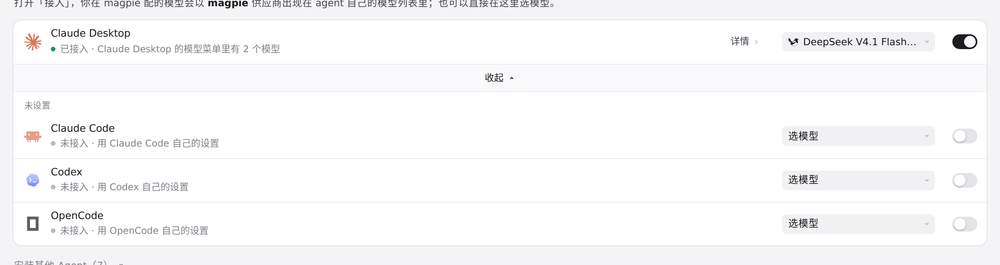
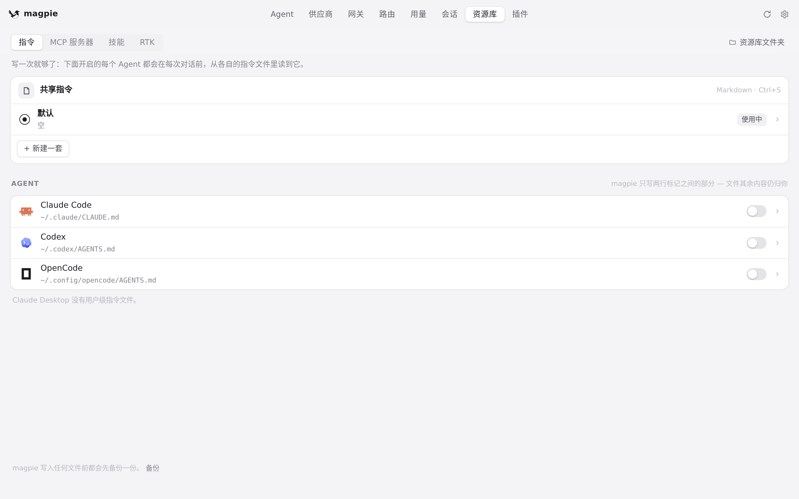
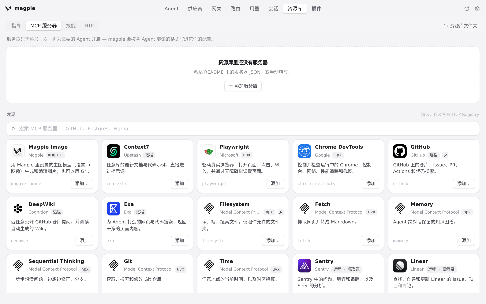
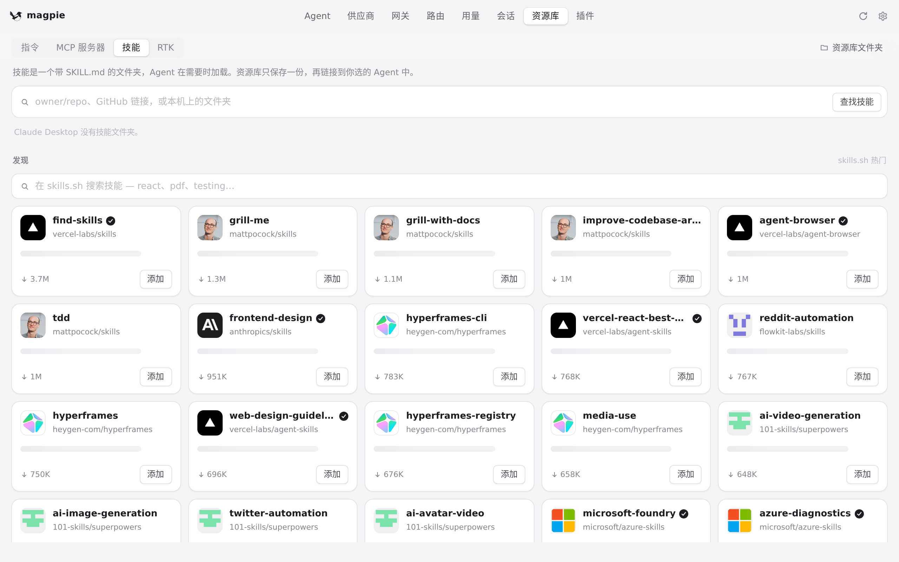

#736 界面预览
commit 63d96cf · 回到 PR · PR 把 AtomCode 注册成新的 Agent：Agents 页多出一行 AtomCode（带 atomcode 图标），模型选择器给出 magpie 目录里的模型并把选择写进 ~/.atomcode/config.toml；资源库为它提供 ATOMCODE.md、mcp.json 与 skills/；用量页按 agent 名识别它的请求。网关本身没有改动。
红线是鼠标走过的轨迹，红色圆环是一次点击；底部文字是这一步在做什么。空格暂停，← → 逐段查看。

Agents 里的 AtomCode · 展开后的 Agent 列表与底部安装入口

Agents 里的 AtomCode · Agent 列表本身

资源库为 AtomCode 接的指令与 MCP · 资源库的「指令」标签

资源库为 AtomCode 接的指令与 MCP · 资源库的「MCP 服务器」标签

资源库为 AtomCode 接的指令与 MCP · 资源库的「技能」标签